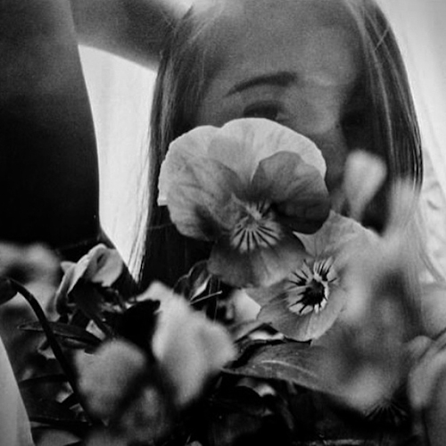

anna laura s
My name is Anna, I'm half Thai, half Hungarian living in Budapest, Hungary.
I consider myself a photographer, specializing with toy cameras.
Over the past ten years I've become well-versed with many technical aspects of photography. I studied black and white darkroom photography, produced prints in a lab setting, and gained extensive knowledge of photography hardware. For five years I also worked for architectural photographer Vince Valdes as his production assistant. During these times I had the good fortune to learn the craft from a highly accomplished working professional.
I am very passionate about photography and at every opportunity, spend free time constantly trying to improve my craft and learn new techniques by taking pictures, utilizing toy cameras. I am known to take a camera wherever I go and I like to experiment with a variety of films, which I process at home on my own.
